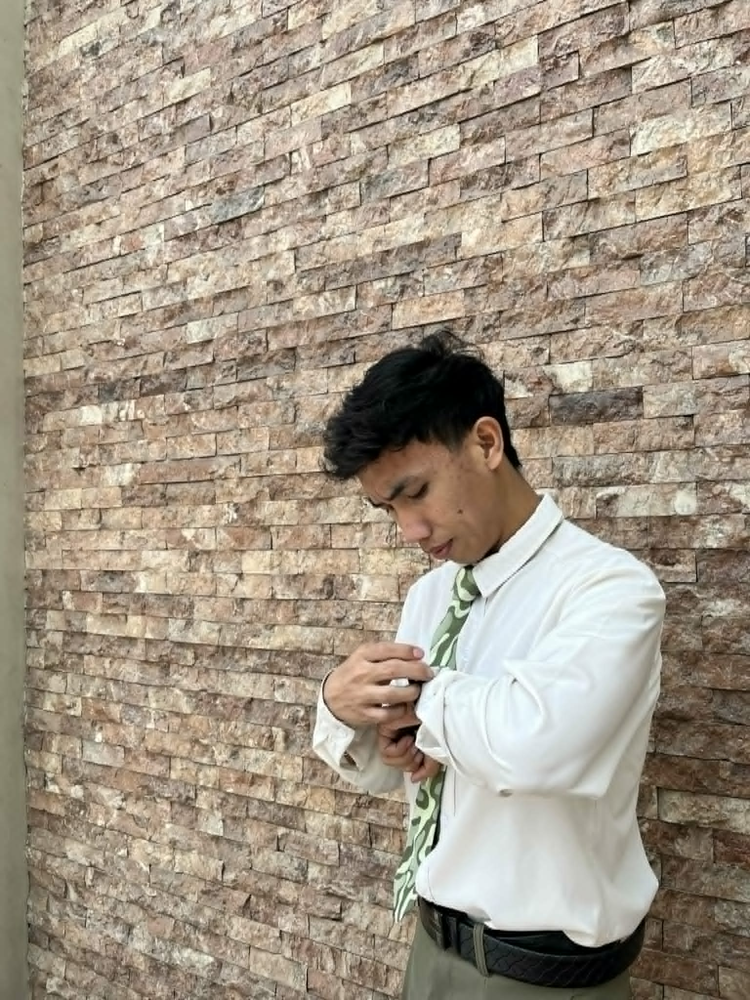

Jeffrey Davila
About Me
My name is Jeffrey Davila you can call me Jeff. I was born in Philippines, Metro Manila, Malabon City and live with my family in Navotas City. I am currently working as a crew in fisher mall, food court gally hall. I am pianist on my ward and my current calling is Ward Clerk and YSA representative. I love learn new things and approachable person

The Philippines
The Philippines is divided into three main geographical island groups: Luzon, Visayas, and Mindanao. Luzon is the largest island group and is home to the country's capital. Visayas is located in the central part of the country and is famous for its islands and tourist attractions. Mindanao is the southern island group, known for its cultural diversity and rich natural resources.